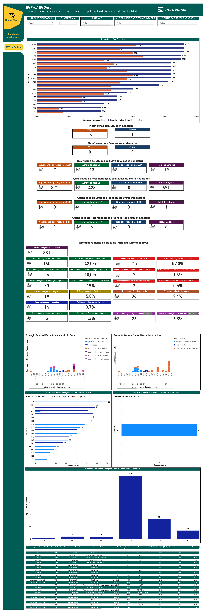
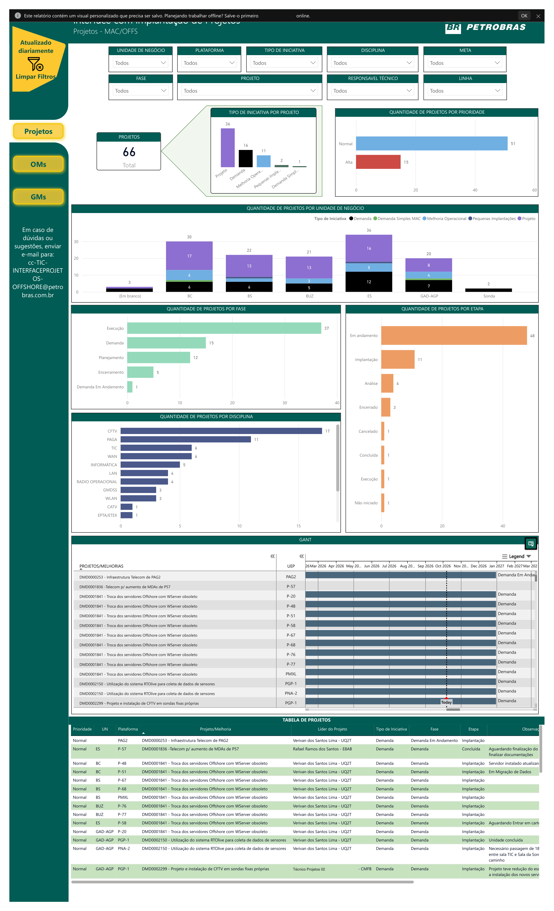
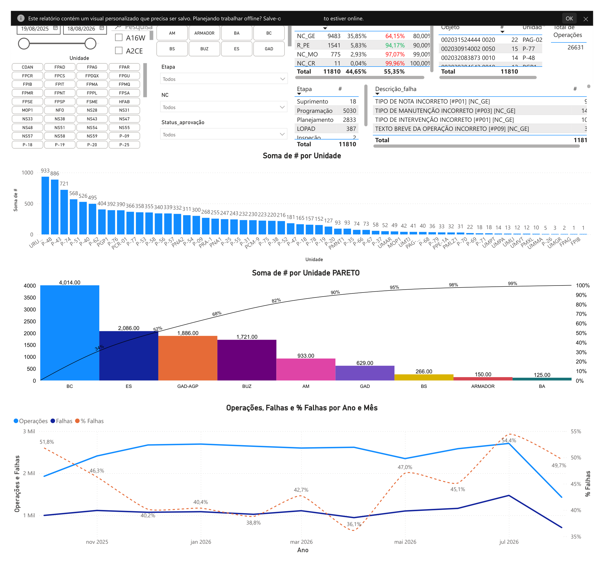
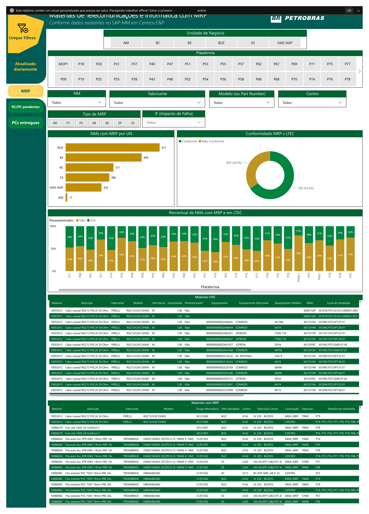
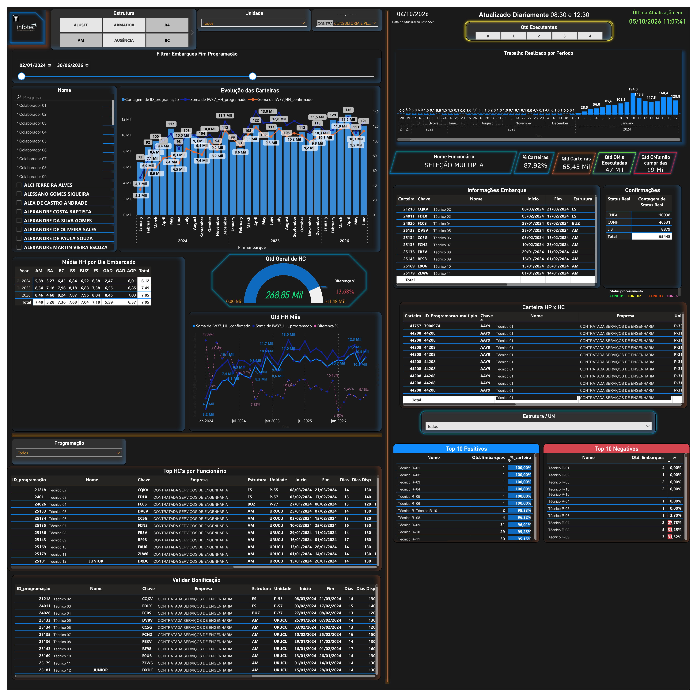
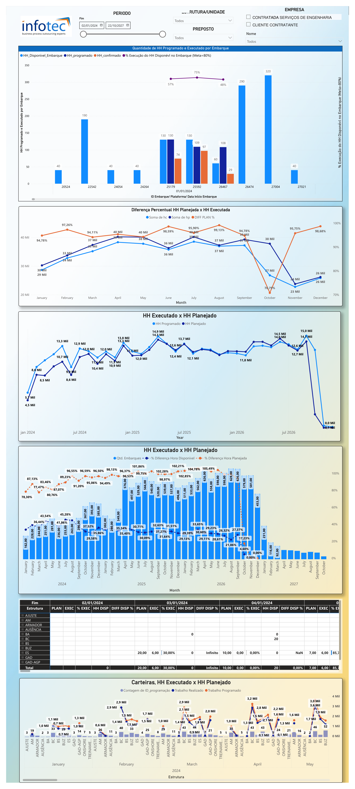

Do dado à decisão
Ciclo completo: extração em SQL, ETL, modelagem em Power Query e Python, visualização em Power BI. Painel que responde pergunta de negócio — e não apenas gráfico bonito.
Analista de Dados de formação — Análise e Desenvolvimento de Sistemas com foco em dados — e, na sequência, Fisioterapia. Trabalho com dados todos os dias; a formação clínica entra como contexto que poucos analistas têm.
Minha primeira formação é em Análise e Desenvolvimento de Sistemas, com foco em dados. Depois veio a Fisioterapia — que me deu um diferencial raro: entender a área de negócio da saúde sem precisar de intérprete. E, nas horas de estudo livre, História e leitura: a base do meu pensamento crítico.
Ciclo completo: extração em SQL, ETL, modelagem em Power Query e Python, visualização em Power BI. Painel que responde pergunta de negócio — e não apenas gráfico bonito.
CIF, escalas validadas, red flags, bandeiras amarelas, históricos de sessão: sei quais campos existem, o que é obrigatório por norma (COFFITO/CFM) e como modelar isso para virar KPI confiável.
Séries temporais de dor, amplitude de movimento, força e evolução de sessões só fazem sentido se quem lê entende a prática. A fisioterapia é meu segundo olhar — não o primeiro.
Relatórios Power BI construídos para operação, suprimentos, qualidade e gestão de projetos — com filtros dinâmicos, KPIs e visões por unidade de negócio.

Mais de 40 páginas acompanhando execução de ações e estudos: status (aprovadas, em andamento, não aprovadas), prazos cumpridos, atrasadas e concluídas, com visões consolidadas por descrição e por período.

Acompanhamento de projetos e gerências de melhoria por unidade de negócio, plataforma, etapa, prazo e líder responsável. Inclui visões de situação atual, ano de criação, atraso em dias e distribuição por unidade.

Análise de Pareto de falhas por operação, com quantidade de ocorrências, % de não conformidade, % conforme e comparação contra meta. Base para atuar primeiro nas causas críticas.

Controle de estoque e requisições integrado ao MRP: situação de estoque, ordens e remessas, prioridade de entrega, materiais parametrizados, centros, depósitos e ponto de reabastecimento.

Painel de acompanhamento da evolução de carteiras offshore, consolidando movimentação e performance ao longo do tempo.

Comparativo entre quadro atual e planejado, acompanhando desvios de headcount por unidade para suporte à decisão de contratação e dimensionamento.
Meu projeto principal é software, mas ele nasce da minha primeira formação: Análise e Desenvolvimento de Sistemas. É um sistema real de saúde em que cada atendimento vira dado estruturado e analisável.
Plataforma completa de avaliação e acompanhamento em fisioterapia e saúde. O fisioterapeuta atende de forma natural (fala, clique, toque) e o sistema estrutura tudo em dado: condição detectada, sinais, medidas, escalas, classificação e evolução. Você deixa de digitar planilha — o prontuário digital nasce analítico.
É o exemplo de que sei modelar dados de saúde: conheço o domínio clínico, sei o que separar em campo, tabela e medida, e sei calcular indicadores válidos a partir disso.
Queixa, HDA e palpação por dígito ou transcrição de voz (pt-BR). Nada de questionário frio.
Detecção automática de +20 condições, local da dor com lateralidade (D/E), BodyMap 34 áreas, HDA, fatores de melhora/piora, red flags e yellow flags.
Goniometria com ângulos normativos, força MRC em 12 grupos, 38+ testes especiais com vídeo e 36 escalas validadas (cálculo e MCID/MDC automáticos).
CIF automatizada: códigos e qualificadores (0–4) gerados a partir dos dados da avaliação + base de evidências PEDro e guias de prática clínica.
IA contextual (Claude) analisa todos os dados e gera análise clínica e plano baseado em evidência, com histórico por paciente.
Dashboard global cruza módulos, red flags e EVA média; ponte de transição entre módulos (fisio → Ed. Física); relatório multidisciplinar imprimível.
Pacientes (IMC automático), log de evolução por sessão, agenda e financeiro com honorários CREFITO por região.
Scripts em MQL5 para MetaTrader 5 executando estratégias de day trade, com backtesting, testes de estresse e leitura de dados em tempo real sob alta volatilidade.
class KPIEngine:
"""Calcula todos os KPIs a partir das trades."""
def analyze(self, trades):
# Filtrar apenas trades com profit (excluir depósitos)
closed = [t for t in trades
if t.get('profit') is not None]
if not closed:
return {'error': 'Nenhuma operação fechada'}
closed.sort(key=lambda t: t.get('open_time')
or datetime.min)
analysis = {
'summary': self._summary_kpis(closed),
'daily': self._aggregate_by_period(
closed, 'day'),
}
… trecho truncado · código completo no repositório
Painel web para monitoramento de robôs, com interface em tema escuro e leitura de dados em tempo real.
function renderTabela(data) {
const linhas = data.map(d => `
<tr>
<td>${d.nome}</td>
<td class="${gpCls(d.pnl)}">
${format(d.pnl)}
</td>
</tr>`);
tbody.innerHTML = linhas.join('');
}
function renderHistorico(historico) { /* … */ }
… trecho truncado · código completo no repositório
Página de vendas com checkout, construída em HTML/CSS puro, com foco em conversão.
<section class="hero">
<h1>BreaKeltner v3.0</h1>
<p class="sub">
Sistema de breakout profissional
para o mercado futuro (WIN)
</p>
<a href="#checkout" class="cta">
Garantir acesso
</a>
</section>
<style>
body { background:#0A0E14;
color:#C8D6E5; }
</style>
… trecho truncado · código completo no repositório
Web scraping para capturar cotações atuais de fundos imobiliários brasileiros e consolidar os dados para análise.
header = {'User-Agent': 'Mozilla/5.0 ...'}
url = 'https://www.fundsexplorer.com.br/ranking'
request = requests.get(url, headers=header)
df = pd.read_html(request.text)
# enumerando DataFrames
for i, tabela in enumerate(df):
print('---------------------------')
# tabela principal => DataFrame 0
df = pd.DataFrame(df[0])
… trecho truncado · código completo no repositório
Extração de dados de casos de Covid no mundo para análise e acompanhamento da evolução da pandemia.
from urllib.request import urlopen
from bs4 import BeautifulSoup
import pandas as pd
html = urlopen("https://bit.ly/3jpMFRW")
soup = BeautifulSoup(html, "html.parser")
table = soup.findAll("table",
{"class": "wikitable"})[0]
rows = table.findAll("tr")
with open("Dataset.csv", "wt+", newline="") as f:
writer = csv.writer(f)
for row in rows:
writer.writerow(row)
… trecho truncado · código completo no repositório
Formulário de pesquisa de satisfação com validação e estruturação de coleta de respostas.
document.querySelector("form")
.addEventListener("submit",
function(event) {
this.style.display = "none";
document.querySelector(
"#success-message"
).style.display = "block";
submitAnswers();
}
);
… trecho truncado · código completo no repositório
Site pessoal com seção sobre, projetos e contato, com layout responsivo para desktop, tablet e mobile.
<article class="profile-card">
<h1>Kleber Carboni</h1>
<span class="profile__text">
Analista de Dados — ADS com foco em
dados, Fisioterapia em seguida
</span>
</article>
@media (max-width: 768px) {
.profile-card { flex-direction: column; }
}
… trecho truncado · código completo no repositório
Ferramentas que uso no dia a dia, somadas ao vocabulário da prática fisioterapêutica — a combinação que faz a diferença em projetos de health analytics.
De Marx a Machado, de Fanon a Sagan: a leitura é a base do meu pensamento crítico — o mesmo que aplico para questionar, modelar e interpretar dados. Interesse constante por História, política, ciência e literatura.
De desenvolvimento de sistemas a supervisão de operações com dados — sempre no ponto onde informação vira decisão.
Gestão de Passivos ("Zero R100"): dashboard estratégico de ordens críticas que erradicou o passivo de 100 dias e manteve prazos sob controle preventivo.
Monitoramento em tempo real: painel de indicadores Status RAG cruzando ativos com ordens de serviço, reduzindo drasticamente o tempo de resposta a intervenções.
Inteligência operacional: automação de extração do SAP para monitoramento D-1, ferramentas de férias e controle de inventário offshore — zerando déficit de ferramentas e multas contratuais.
Consultoria em BI: dashboards para estruturação de KPIs corporativos e indicadores gerenciais restritos, otimizando a tomada de decisão.
Engenharia e ciência de dados: coleta, extração e estruturação de bases via SQL, análises descritivas, feature engineering e suporte a modelos preditivos.
Alta volumetria: dashboards de indicadores sobre milhares de transações financeiras e operacionais de empresas aéreas integradas ao PagSeguro, viabilizando resposta quase imediata a incidentes.
Pipelines e testes: fluxos ETL, mapeamento de métricas do produto e condução de testes A/B para integridade do sistema.
Dashboards no Looker para monitoramento diário de KPIs voltados aos stakeholders, com scripts de automação em Python e consultas SQL.
Aberto a oportunidades remotas em análise de dados, engenharia de dados, BI e health analytics.